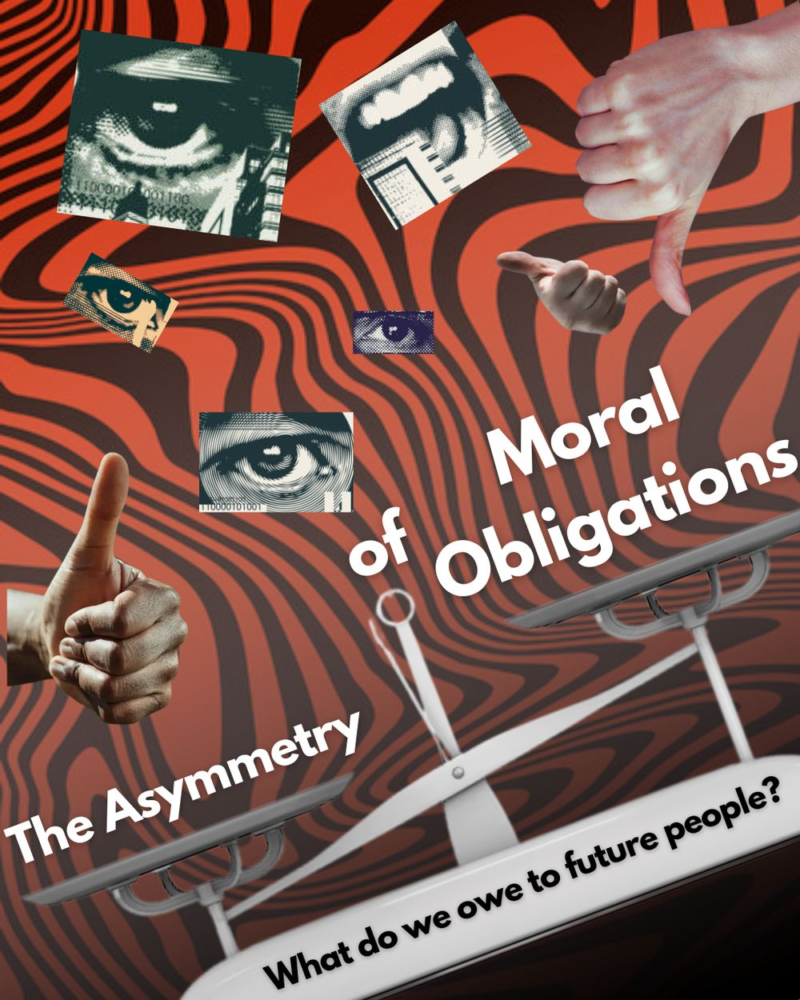

I
John Locke Essay Competition
The Asymmetry of Moral Obligations
We can ground our obligations to the living in ordinary morality. Our obligations to future people cannot be grounded that way at all.
Moral disagreement is permanent, and we cannot know how future values will diverge from ours, so fixed precepts are the wrong tool for questions like climate change. Using Moehler’s multilevel social contract theory, the essay separates intuitive first-level morality from second-level bargaining among instrumentally rational agents, and argues that only the second can bind us across generations.
Very High Commendation · top 1% globally
Read the essay